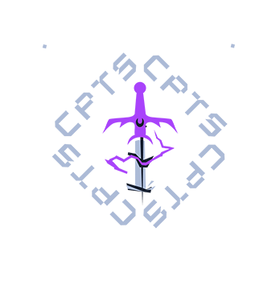
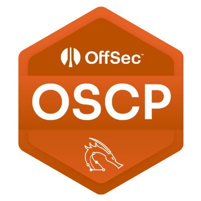
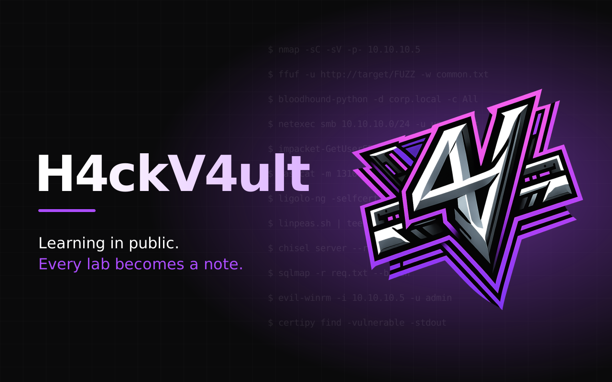
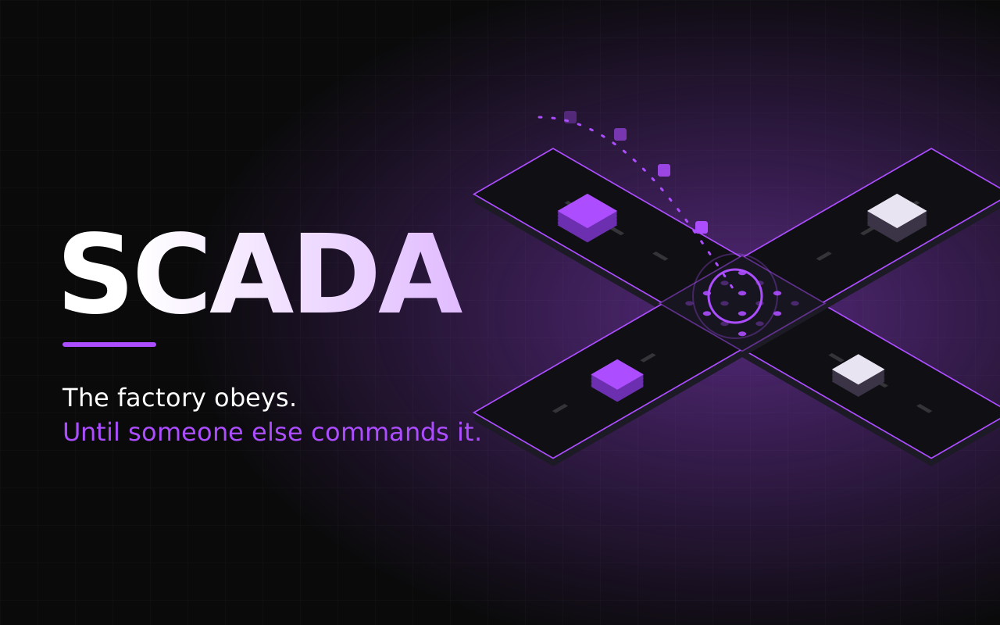
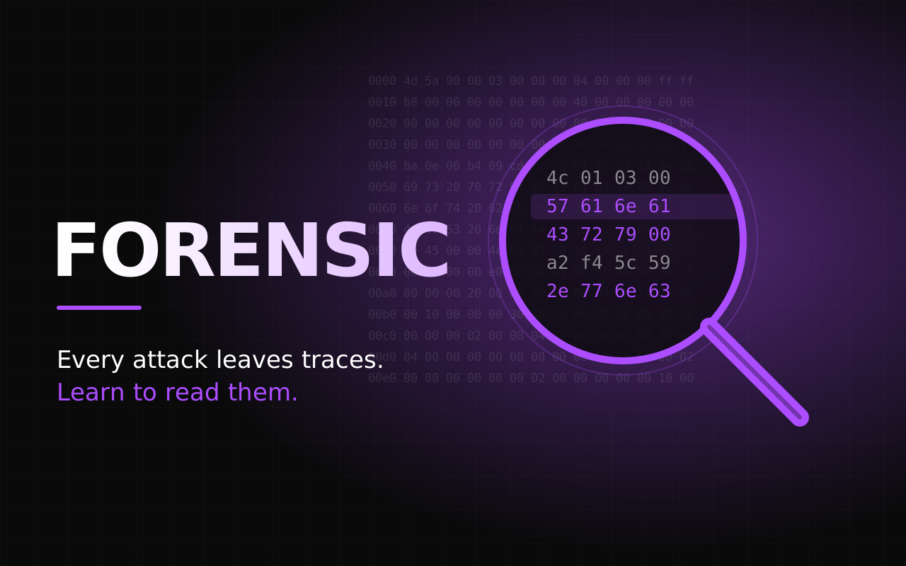

01
Offensive Security
And so many other tools from the Kali Linux ecosystem.
Pentester focused on internal infrastructure and Active Directory, with a background in vulnerability management
From finding exposure to proving impact and getting it fixed.
Internal and web assessments, from recon to post-exploitation, with clear and actionable reporting.
Identification, prioritization and remediation tracking across enterprise environments.
Here is a little bit of my background, my education the places i worked and the certifications i own.
Operating and managing multiple SIEM platforms to monitor security events, analyze alerts, and escalate incidents in accordance with established procedures. Actively involved in incident investigation and documentation, producing clear and structured reports to support incident response, threat analysis, and continuous improvement of security operations.
Master’s program combining offensive and defensive security. Coursework covered cyber intelligence and threat analysis, reverse engineering of software and malware, ethical hacking and penetration testing, SOC operations, and incident response. This blend of attacker and defender perspectives gives me a solid understanding of how threats are built, detected and contained.
Hack The Box’s Certified Penetration Testing Specialist. A multi-day, fully practical exam in a realistic enterprise network, ending with a professional-grade pentest report. No multiple choice, no shortcuts.

Responsible for vulnerability management and security operations across critical systems at a major international airport. Duties include monitoring and configuring security tools (AV, EDR, SIEM, DLP), coordinating security audits (Nessus, ISO 27001, ethical hacking), and analyzing and responding to suspicious security events. Also oversee change management, patching cycles via SCCM, backup compliance, and disaster recovery testing and planning, while supporting the day-to-day maintenance of data center infrastructure and the rollout of new projects and services.
Offensive Security Certified Professional. A 24-hour practical exam where you compromise machines under pressure, then document everything in a professional report. Next on my roadmap.

Proof of work, not just certificates.

My open knowledge base of hacking notes: practical guides on ethical hacking, pentesting techniques and defensive security, written from what I learn in labs and certifications. Free to read, built to be useful.
Preview
SCADA systems run power grids and water treatment plants, and attackers know it. A deep dive into how they work, how they evolved and how they get breached, from architecture and protocols to real-world attacks like Stuxnet.
View details
Every cyberattack leaves traces, and someone has to know how to read them. My Final Degree Project adds digital forensics to LOST, the security training platform built by La Salle and ISECOM, covering procedures, tools, legislation and hands-on scenarios.
View detailsTechnologies, tools and frameworks I use across offensive security, vulnerability management, infrastructure and cloud environments.
And so many other tools from the Kali Linux ecosystem.
Open to pentesting and red team opportunities. Available to relocation